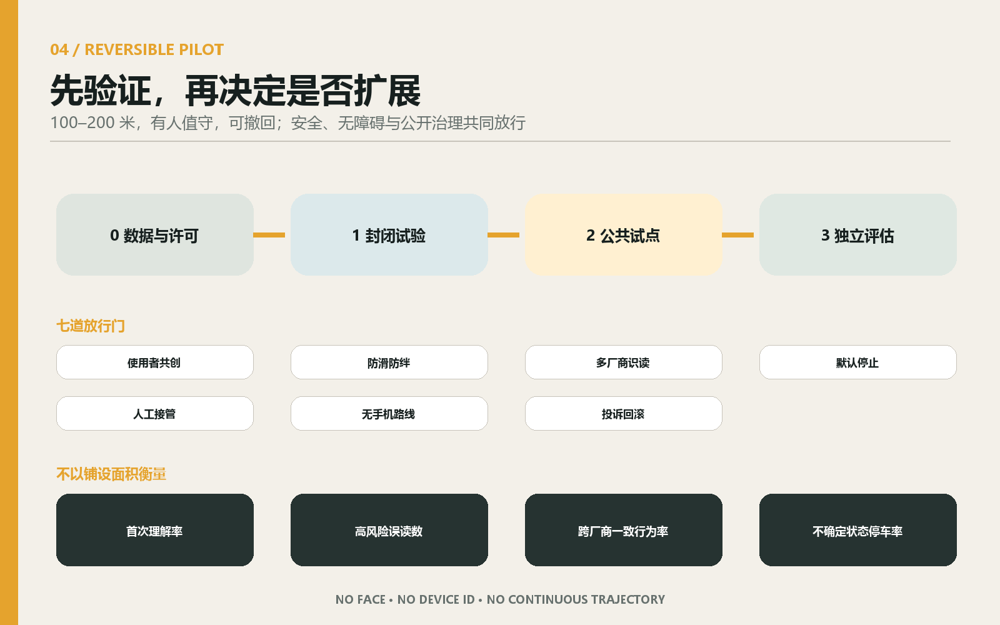

京张地语：人机共读的公共地面语言
以六个开放地面词汇让行人、无障碍使用者和不同厂商机器人共读同一公共空间规则，并在三区两翼建立可撤回、可检验、可治理的城市级试验链。
京张地语
让机器在公共空间遵守人能看懂的规则。
京张地语不是给城市再加一块屏幕，也不是为某一家机器人铺设专用车道。它提出一套开放、被动、低技术依赖的公共地面语言：同一个地面状态同时具有视觉、触觉和机器三种译法，使普通行人、盲杖或轮椅使用者、维护人员以及不同厂商的移动机器人能够对“行、让、界、泊、援、改”形成共同理解。机器识读失败时默认停下并让人；没有手机、没有网络的人仍能完成同一段路程。
总体结构为“一线三译、三区两翼、六词十二景”。京张廊道是一条可连续学习的“地语线”；众智园、北京 AI 原点社区和大钟寺分别承担验证、共读和交接；中关村科技服务翼与小月河场景赋能翼连接标准、企业、维护和社区反馈。首期只实施一段 100—200 米、可撤除、有人值守的试验段，不以一次性大建设替代验证。来源 来源 指标 指标

1. 为什么是“地语”
今日公共空间面对一个新的沟通缺口：人通过铺装、路缘、标志和他人动作判断路权；机器人却依赖各自地图、标签和云端接口。设备越多，城市越可能被切成互不兼容的机器领地。京张地语把接口放回公共地面，把“机器该怎样做”变成居民也能监督的公共规则。
这不是法定盲道、交通标线或应急系统的替代物。现有无障碍设施和交通规则始终优先；新词汇必须在盲人、低视力、轮椅及神经多样性使用者共同设计后，证明不会造成绊倒、打滑、误导或排斥，才可进入公共试验。来源 来源 来源 标准
原创性审计覆盖仓库合并目录、PR 标题与正文、非 PR 议题、代码搜索和语义检索。最接近的三个方案分别关注无障碍编码、自动驾驶路缘治理和轮流通行，但没有同时提出“开放被动地面语法＋视觉/触觉/机器三译＋跨厂商测试＋公共版本治理”这一完整核心。仓库仍会变化，因此本结论是截至审计时点的可证判断，不是永久独占声明；创建 PR 前必须增量复查，若出现同核心方案则停止发布并重新定位。来源
2. 六词：最小而完整的公共语法
六个词只表达公共空间状态，不承载身份、支付、广告或行为画像。视觉层采用高对比边线与简明图形；触觉层采用经共创验证的表面差异；机器层采用公开编码、几何轮廓与校验位。任何一层损坏，其余两层仍能被理解；机器层无法确认时执行默认停止。
| 词 | 人的含义 | 空间动作 | 机器最低行为 |
|---|---|---|---|
| G1 行 / LINE | 可连续通过 | 给出方向连续性 | 低速沿线，遇人让行 |
| G2 让 / YIELD | 此处先让别人 | 在冲突点留出等待区 | 减速、停下、确认后通过 |
| G3 界 / EDGE | 不应跨越的边界 | 标出危险或保护界面 | 不跨界；定位不确定即停 |
| G4 泊 / BERTH | 短时停靠与交接 | 把停留从通行带移开 | 只在空闲泊位停靠 |
| G5 援 / HELP | 可找到人工帮助 | 设置可见、可触达服务点 | 请求人工接管，不采集身份 |
| G6 改 / CHANGE | 临时变化或绕行 | 显示施工、活动、故障状态 | 使用现场版本；冲突时停下 |

开放不等于无管理。每个词都有版本号、材料批次、安装位置、维护责任、回滚条件和公开变更记录；厂商可实现自己的识别器，但不能改变词义。AprilTag 证明开放视觉基准可支持稳定识读，Open-RMF 展示跨设备协同的开放路径；京张地语与二者不同之处，是把机器接口转译成人可以直接阅读和质询的公共空间状态。来源 来源
3. 三区两翼：从标准到日常再到交接
F1 众智园译码场负责“能否读对”。它布置多厂商共同读码、雨雪污损遮挡、逆光和默认停止测试，把识别率之外的误读、停机和人工接管也列为结果。F2 AI 原点共读公社负责“人是否理解”。在近校社区和公共服务场景中，由八类使用者共同修改词形、触感、说明和非数字路线。F3 大钟寺交接场负责“能否进入真实运营”。配送、维护、活动和公共服务在这里练习泊位交接、现场改道、人工援助和版本召回。来源 指标 指标
两翼不是新增行政边界。中关村科技服务翼连接标准、法律、安全评估、供应链和企业采用；小月河场景赋能翼连接社区、绿地、维护与连续慢行反馈。三处重点区 polygon 均为仓库临时几何，其中大钟寺质心被公开议题指出距大钟寺站约 2.26 公里且靠近北京北站，因此本方案只提出片区级功能逻辑，不声称具体站点、路口四象限、地块或工程位置。来源 空间数据

4. 十二个场景，八类使用者
前三个场景构成产业验证链：S1 多厂商共同读码、S2 天气与遮挡试验、S3 人机互相理解试验。其余九个把语法带入日常：站点最后十米、盲杖共读、轮椅与婴儿车过渡、无身份配送交接、维护巡检、施工与应急改道、京张文化译码、无应用市集与公共服务、社区纠错与版本召回。指标
八类关键使用者包括盲人或低视力独立出行者、轮椅或代步车使用者、不使用智能手机的老年人、儿童与照护者、普通行人与骑行者、维护人员、配送与现场交接人员，以及机器人开发与安全测试人员。每个场景都必须写明非数字路径、数据边界、人工责任人、停止阈值和恢复记录。机器人不因效率获得优先权，儿童和无障碍使用者不是“边缘案例”，而是放行门槛。来源 来源 来源

5. 三个公共地标
地语通过三件可触摸、可讲述的公共作品进入京张文化叙事。让行标把“机器先让人”做成走廊起点的共同承诺；地语零号碑展示六词的当前版本、历史修改和公开测试方法；交接钟在设备转入人工接管或重要版本更新时留下可感知的公共时刻。三者均为概念性、可逆的地面或街具装置，不附着于未经核实的铁路遗产本体，也不替代法定标志。
与单向度的“AI 展示”相比，地标把城市的价值选择显性化：技术可以更新，行人优先、无身份可用、失败可见和责任可追溯不能被更新掉。它们也构成面向学校、开发者和公众的开放课程，使百年京张从交通工程遗产延伸为“人如何共同制定机器规则”的当代文化带。
6. 100—200 米可撤回试点
首期不铺满全线，而是在取得场地许可后选择一个不占用法定盲道、不触及遗产本体、可全程看护的 100—200 米候选段。阶段 0 完成官方边界、产权、交通、无障碍、遗产、市政和维护核验；阶段 1 在封闭环境做材料与识读测试；阶段 2 才进入有人值守的公共试点；阶段 3 由独立评估决定扩大、修改或撤除。深度 空间数据
放行门包括：使用者共同设计通过、与法定触觉铺装可明确区分、湿滑与绊倒风险合格、两种以上厂商独立识读、遮挡或冲突时默认停止、现场人工接管有效、无需手机的路线完整、投诉与回滚机制已公开。成效不以“安装面积”衡量，而看误读与险情、人工接管时间、无数字路径完成率、使用者理解度、维护关闭时长和公开问题解决周期。试点不采集人脸、设备身份或连续轨迹；必要的事件日志最小化、短期保存并公开字段说明。

7. 专业边界与后续深化
本提交的总体边界和三处重点区均来自仓库维护的临时粗略几何，不是官方红线；道路、建筑、地块、遗产保护、市政和交通调查也未提供。用地、道路、绿地、公共空间和分期图层用于概念组织与结构化复核，不能支持拆改留、容积率、工程量或审批结论。尤其建筑基底为低可信结构占位，容积率保持未知。指标 指标 深度
进入任何现场行动前，需由规划、交通、无障碍、材料、遗产、消防、市政、法律和运营团队完成专业复核，并由真实使用者共同设计。详细任务包括：获得官方 polygon 与测绘；校准道路和人流冲突；做材料耐久、排水、冰雪与清洁测试；完成触觉辨识和认知研究；制定开放技术规范、采购中立条款、事故责任和版本治理；以独立安全评估决定是否试点。
8. 开放价值
京张地语的创新不在于再造一种二维码，而在于建立一份公共契约：机器遵守的规则也应被人看见、触摸、讨论和否决。六个词足够小，能在一段路上被真实验证；三种翻译足够开放，能避免厂商锁定；三区两翼足够完整，能把研发、共创、运营和治理接成海淀的创新链。若试验失败，地面可以恢复；若试验成功，城市获得的不是一套专有设施，而是一种可复制、可审计、以人为先的公共 AI 基础设施。